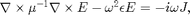
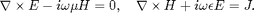
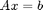

maxwell_axb
Matrices and vectors associated with the electromagnetic wave equation.
Contents
Syntax
- [A, x, b] = maxwell_axb(grid, eps, E, J) returns the matrix and vectors for the electromagnetic wave equation for the E-field (see below).
- [A, x, b] = maxwell_axb(grid, [eps, mu], ...) does the same for mu not equal to 1.
- [A, x, b] = maxwell_axb(grid, eps, [E H], J) returns the matrix and vectorsfor the electromagnetic wave equation written for both E- and H-fields.
- [A, x, b] = maxwell_axb(grid, [eps mu], [E H], J) does the same for mu not equal to 1.
- ... = maxwell_axb(..., 'functional', true) returns an A which is a function, not a matrix. Specifically, A(x) must be used in place of A*x. This may cut down the memory requirements that a full A-matrix requires for large simulations.
Description
The electromagnetic wave equation for the E-field that Maxwell solves is

which is equivalent to the equation which uses both E- and H-fields

maxwell_axb composes systems of equations, in matrix form , to represent either of these equations (depending on the user's input parameters).
Once the matrix A, and vectors x and b have been obtained, a representative error can be calculated via norm(A*x-b)/norm(b). Note that this error may differ from that calculated displayed during the solve process because of various "tricks" Maxwell uses to speed up the solve process.
Source code
function [A, x, b] = maxwell_axb(grid, eps_mu, E_H, J, varargin) % % Validate and parse input values. % my_validate_grid(grid, mfilename); [eps, mu] = my_split(eps_mu, grid.shape, {'eps', 'mu'}, mfilename); if isempty(mu) mu = my_default_field(grid.shape, 1); end [E, H] = my_split(E_H, grid.shape, {'E', 'H'}, mfilename); my_validate_field(J, grid.shape, 'J', mfilename); % Parse optional arguments. options = my_parse_options(struct( 'functional', false), ... varargin, mfilename); validateattributes(options.functional, {'logical'}, {'binary'}, ... 'functional', mfilename); % % Helper variables and functions. % dims = grid.shape; N = prod(dims); my_diag = @(z) spdiags(z(:), 0, numel(z), numel(z)); my_blkdiag = @(z) blkdiag(my_diag(z{1}), my_diag(z{2}), my_diag(z{3})); % % Build component matrices. % (The matrices which will be used to build the large A matrix.) % if ~options.functional % Build the full matrices. % Get the relevant derivative matrices. [spx, spy, spz] = ndgrid(grid.s_prim{1}, grid.s_prim{2}, grid.s_prim{3}); [sdx, sdy, sdz] = ndgrid(grid.s_dual{1}, grid.s_dual{2}, grid.s_dual{3}); % Derivative in x, y, and z directions. Dx = deriv('x', dims); Dy = deriv('y', dims); Dz = deriv('z', dims); Z = sparse(N, N); % Forward differences (used to compute H from E). Dfx = my_diag(sdx.^-1) * Dx; Dfy = my_diag(sdy.^-1) * Dy; Dfz = my_diag(sdz.^-1) * Dz; % Backward differences (used to compute E from H). Dbx = -my_diag(spx.^-1) * Dx'; Dby = -my_diag(spy.^-1) * Dy'; Dbz = -my_diag(spz.^-1) * Dz'; % Form curl matrices. % A1 and A2 compute the curls of H- and E-fields respectively. A1 = [ Z, -Dbz, Dby; ... Dbz, Z, -Dbx; ... -Dby, Dbx, Z]; A2 = [ Z, -Dfz, Dfy; ... Dfz, Z, -Dfx; ... -Dfy, Dfx, Z]; % Dummy functional forms. [A1_fun, A2_fun] = deal(@()[], @()[]); else % Build the functional forms. [A1_fun, A2_fun] = my_functional_A(grid); end % Form vectors representing the permittivity and permeability. m = [mu{1}(:) ; mu{2}(:) ; mu{3}(:)]; e = [eps{1}(:) ; eps{2}(:) ; eps{3}(:)]; % % Form final output matrix and vectors.. % % Inline functions in case we need them. function [z] = multA_E(x) z = A1_fun((1./m) .* A2_fun(x)) - grid.omega^2 * (e .* x); end function [z] = multA_EH(x) x1 = x(1:3*N); x2 = x(3*N+1:end); z = [ (A1_fun(x2) - 1i * grid.omega * (e .* x1)); ... (A2_fun(x1) + 1i * grid.omega * (m .* x2))]; end % Assign A appropriately. if ~options.functional if isempty(H) % Wave equation in E. A = A1 * my_diag(1./m) * A2 - grid.omega^2 * my_diag(e); else % Wave equation in E and H. A = [-1i*grid.omega*my_diag(e), A1; A2, +1i*grid.omega*my_diag(m)]; end else if isempty(H) % Wave equation in E. A = @multA_E; else % Wave equation in E and H. A = @multA_EH; end end % Calculate x and b vectors. if isempty(H) x = [E{1}(:) ; E{2}(:) ; E{3}(:)]; b = -i * grid.omega * [J{1}(:) ; J{2}(:) ; J{3}(:)]; else x = [E{1}(:) ; E{2}(:) ; E{3}(:) ; H{1}(:) ; H{2}(:) ; H{3}(:)]; b = [J{1}(:) ; J{2}(:) ; J{3}(:); zeros(3*N, 1)]; end end function [D] = deriv(dir, shape) % Private function for creating derivative matrices. % Note that we are making the forward derivative only. % Also, we assume periodic boundary conditions. shift = (dir == 'xyz'); % Direction of shift. % Get the displaced spatial markers. my_disp = @(n, shift) mod([1:n] + shift - 1, n) + 1; [i, j, k] = ndgrid(my_disp(shape(1), shift(1)), ... my_disp(shape(2), shift(2)), ... my_disp(shape(3), shift(3))); % Translate spatial indices into matrix indices. N = prod(shape); i_ind = 1 : N; j_ind = i + (j-1) * shape(1) + (k-1) * shape(1) * shape(2); % Create the sparse matrix. D = sparse([i_ind(:); i_ind(:)], [i_ind(:), j_ind(:)], ... [-ones(N,1); ones(N,1)], N, N); end